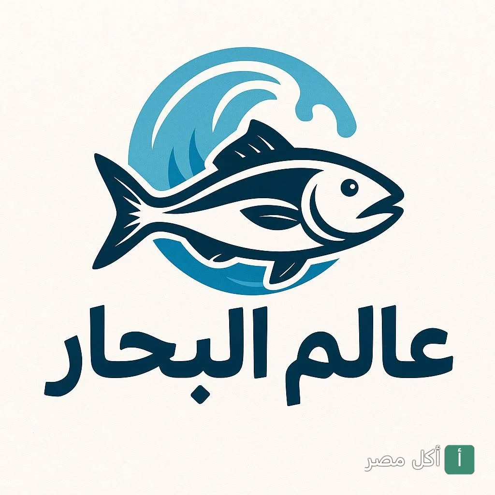

بلطي
مشوى - ردة - زيت و ليمون - سنجارى - مقلى
130 جنيه
اختار طلبك من المنيو وكلمنا على 01155218093.

الأسعار بالجنيه المصري من صفحة أكل مصر (آخر تحديث معلن: ٢٠ أكتوبر ٢٠٢٦). أكد السعر مع المطعم عند الطلب.
الأصناف والأسعار من صفحة أكل مصر المنشورة. أكد تفاصيل طلبك والسعر مع المطعم عند الاتصال.